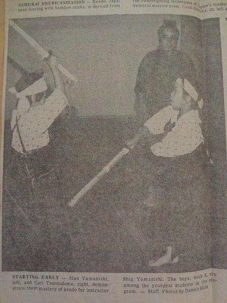
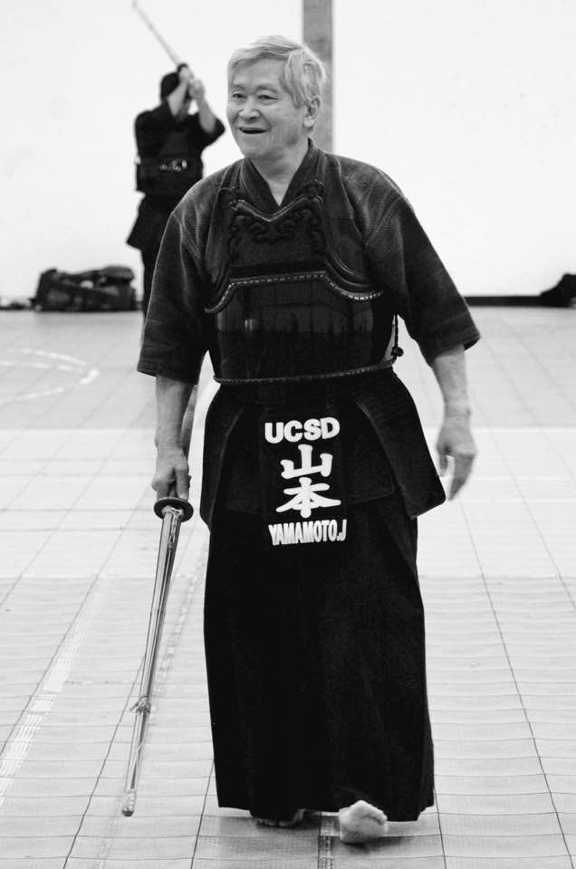
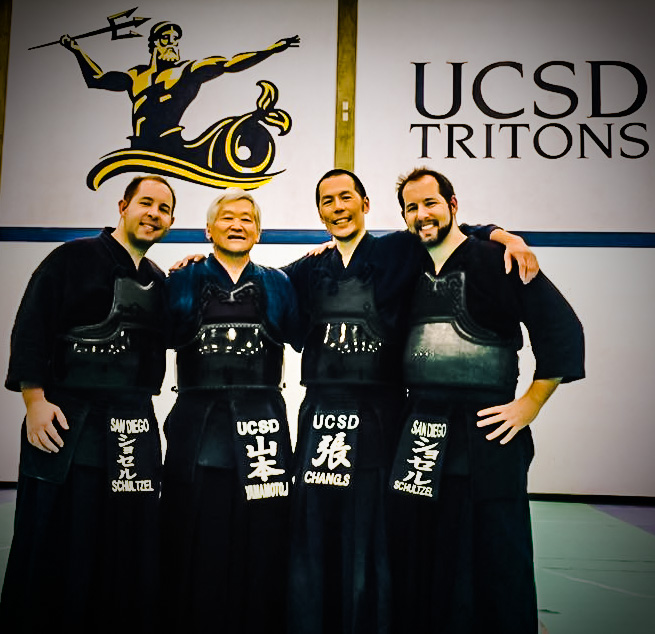

Head Instructor History:
Maki Miyahara Sensei (8-Dan Hanshi): 1972-1974
Shigeo Yamanishi Sensei (5-Dan): 1974-1976
Kikuo Uyeji Sensei (6-Dan Renshi): 1976-2006
Dr. John Yamamoto Sensei (4-Dan): 2006-2014
Dr. Henry Kikunaga Sensei (5-Dan): 2014-present
San Diego Kendo Bu (SDKB) was founded in February 1972 by Shigeo Yamanishi Sensei and practiced at the San Diego Buddhist Temple. Kikuo Uyeji Sensei joined SDKB early on. At the foundation of SDKB, Yamanishi sensei and Uyeji sensei were 1-Dan and not qualified to teach at the time. Therefore, Maki Miyahara Sensei stepped in and became the first Sensei of SDKB. Miyahara sensei was from the Pasadena Cultural institute and the highest ranking sensei in the country at 8-Dan.
Eventually, Yamanishi sensei obtained 5-Dan and was a member of the US Kendo team in the 3rd World Kendo Championships in Great Britain in 1976. Kikuo Uyeji Sensei eventually obtained Renshi 6-Dan.
In the same year, 1972, John Yamamoto Sensei (at the time in his 30's) was helping rehabilitate young Asian American drug parolees. As he had heard that Yamanishi Sensei was starting a new kendo club, Yamamoto Sensei brought ten of them to the dojo to have them learn kendo as part of their Japanese heritage.
Victor Uyeji (at that time, 19 years old) joined in the same year. Initial members included Carl Yamamoto (Yamamoto Sensei's brother), Kichi Hayashi (brother in law to Yamamoto Sensei), David Uda, Ronnie Morinaka, Barry Morinaka and Frank Endo. After Yamanishi Sensei passed away, SDKB practices were led by Uyeji sensei and Yamamoto sensei.
In summer of 2014, Henry Kikunaga Sensei, 5-Dan, took over as Head Instructor of SDKB from John Yamamoto Sensei.
Kikunaga sensei started kendo when he was 7 years old with San Jose Dojo under Charlie Tanaka Sensei. After competing and contributing to the Northern California Kendo Federation's successes at the US Kendo Championships a handful of times both as member of the youth team and Men's teams over the years, he began practicing at SDKB while attending the University of California, San Diego (UCSD).
In 1998, Kikunaga sensei wanted to start a "University" Kendo class to teach kendo to college students. However, he needed the assistance from a local sensei and advisor at the time according to the university. Yamamoto sensei and Alfonso Gomez Sensei (Karate instructor and martial arts department advisor at UCSD) stepped in to help advise and help set up the UCSD Recreational Class for Kendo.
The UCSD Recreational class has been going strong since then with it being the most popular recreational class on the campus for a number of years. From the UCSD Recreational Kendo class has sprouted about a handful of young sensei in its short time of existence and even had a member represented on the Women's National Team that competed at the World Kendo Championships. In addition, the UCSD Kendo Team was formed which competed in collegiate tournaments since 2005 with much success.
Also in August 2012, SDKB member, Francisco Villa (2-Dan) moved to Yuma, Arizona to be on faculty at Arizona Western College. There he started Yuma Kendo Club, which is now officially a branch and overseen by San Diego Kendo Bu.
Together, the UCSD Recreational Kendo class, Yuma Kendo Club, and San Diego Kendo Bu have coexisted to contribute to the Kendo Community in the Southwestern United States and continue to uphold the kendo teachings and traditions set forth by its founders of San Diego Kendo Bu.
Senseis
- Student founder of UCSD Kendo Recreational Class
- UCSD Kendo Team Coach 2010-2014
- Head Instructor of SDKB since 2014
- Multiple championship titles including AUSKF Championships, Steveston Dojo Tournament, North/South Tournament both at youth and adult level
- Practiced kendo at San Jose Kendo Dojo (Tanaka Sensei – 7 Dan Hanshi) and in Chicago
- Spent three years in Japan, achieving 3-Dan level in Tokyo under Tamura Toru Sensei (8- Dan) and Itoh Tomoharu Sensei (8-Dan)
- Member of Canadian National Kendo Team, competing at 10 th WKC Championships
- Has practiced kendo Germany and Singapore as well
- UCSD Kendo Team Coach 2003-present
- Executive Vice President – World Kendo Federation
- Head Instructor of Jungmoo Kendo Dojo in Fullerton, CA.
- Practiced in Korea and at Daehan Modokwan in Los Angeles (Kang Sensei, 7 Dan)
- Founder of Daehan Kendo Studio in La Crecenta, CA and Jungmoo Kendo Dojo in Fullerton, CA
- US Army Veteran
- Spent three years in Japan practicing kendo (Nakano Sanaoue, Yokohama National University)
- Co-founded the McGill University Kendo Club in 1993
- Practiced as well at the University of Waterloo, Canada
- Writes kendo-related articles on Kendo Notes
- Head Instructor of UCSD Kendo Recreational Class
- Head Instructor of UCSD Kendo Recreational Class
- Became Head Instructor of UCSD Recreational Class in 2016
- Participated on the UCSD Kendo Team from 2002-2006
- UCSD Kendo Team Coach: 2016-present
- Studied kendo at Moline, IL under Birdsell, Jong, and Bass Senseis
- Studied kendo with Teikyo University in Tokyo as part of a collegiate exchange program as part of the Teikyo-Maycrest University Kendo Club in Davenport, IA.
- Has been part of San Diego Kendo Bu since 1996, having studied under Uyeji, Yamamoto, and Kikunaga Senseis.
- Has practiced kendo in Japan throughout his travels there
- Has attended multiple kendo-related seminars and events, with most recently the latest WKF Championships in Japan (2015) and Korea (2019)
Senseis
- Student founder of UCSD Kendo Recreational Class
- UCSD Kendo Team Coach 2010-2014
- Head Instructor of SDKB since 2014
- Multiple championship titles including AUSKF Championships, Steveston Dojo Tournament, North/South Tournament both at youth and adult level
- Practiced kendo at San Jose Kendo Dojo (Tanaka Sensei – 7 Dan Hanshi) and in Chicago
- Spent three years in Japan, achieving 3-Dan level in Tokyo under Tamura Toru Sensei (8- Dan) and Itoh Tomoharu Sensei (8-Dan)
- Member of Canadian National Kendo Team, competing at 10 th WKC Championships
- Has practiced kendo Germany and Singapore as well
- UCSD Kendo Team Coach 2003-present
- Executive Vice President – World Kendo Federation
- Head Instructor of Jungmoo Kendo Dojo in Fullerton, CA.
- Practiced in Korea and at Daehan Modokwan in Los Angeles (Kang Sensei, 7 Dan)
- Founder of Daehan Kendo Studio in La Crecenta, CA and Jungmoo Kendo Dojo in Fullerton, CA
- US Army Veteran
- Spent three years in Japan practicing kendo (Nakano Sanaoue, Yokohama National University)
- Co-founded the McGill University Kendo Club in 1993
- Practiced as well at the University of Waterloo, Canada
- Writes kendo-related articles on Kendo Notes
- Head Instructor of UCSD Kendo Recreational Class
- Head Instructor of UCSD Kendo Recreational Class
- Became Head Instructor of UCSD Recreational Class in 2016
- Participated on the UCSD Kendo Team from 2002-2006
- UCSD Kendo Team Coach: 2016-present
- Studied kendo at Moline, IL under Birdsell, Jong, and Bass Senseis
- Studied kendo with Teikyo University in Tokyo as part of a collegiate exchange program as part of the Teikyo-Maycrest University Kendo Club in Davenport, IA.
- Has been part of San Diego Kendo Bu since 1996, having studied under Uyeji, Yamamoto, and Kikunaga Senseis.
- Has practiced kendo in Japan throughout his travels there
- Has attended multiple kendo-related seminars and events, with most recently the latest WKF Championships in Japan (2015) and Korea (2019)
Past Senseis
The following senseis have spent some time or otherwise influenced San Diego Kendo Bu.
Kikuo Uyeji Sensei (6-Dan, Dojo Founder)
John Yamamoto Sensei (Dojo Founder)
Kajitani Sensei (7-Dan)
Chinen Sensei (5-Dan)
Chang Sensei (5-Dan)
Kay Liu Sensei
Ayabe Sensei
Ohno Sensei
Hayashi Sensei
Honda Sensei
Catherine Kikunaga Sensei
Hojin Park Sensei
Kusube Sensei
Yamazaki Sensei
Iragashi Sensei
Practice Information
Dojo Address:
2650 Truxtun Road San Diego, CA 92106
- 2nd floor, Suite 207.
Practice times:
Tuesday
Beginners: 7:00pm - 8:00pm (Suite 109)
Advanced: 8:00pm - 10:00pm (Suite 207)
Thursday
Beginners: 7:00pm - 8:00pm (Suite 204)
Advanced: 8:00pm - 10:00pm (Suite 207)
Saturday
12:00pm - 2:00pm (At UCSD Rec Gym)
Note: Saturday classes are through the UCSD recreation department and follow the academic quarter. Please see the UCSD Recreation website for more info: recreation.ucsd.edu. There is also a dedicated UCSD kendo team page.